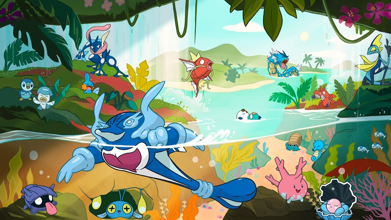
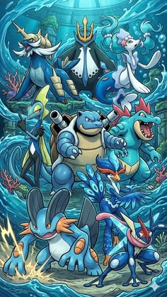
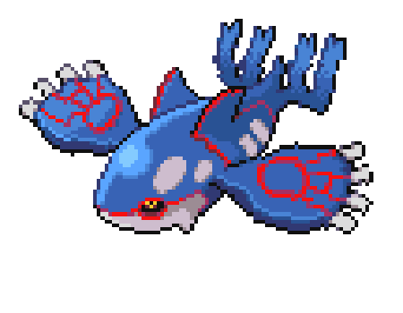

Ambientes acuáticos
Numerosas especies se relacionan con mares, océanos, ríos, lagos, costas y otros espacios con agua.
· UNIVERSO POKÉMON ·
Un acercamiento a las criaturas, características y estrategias de una de las afinidades elementales más reconocibles del universo Pokémon.
Comenzar exploración
01 / INTRODUCCIÓN

Pokémon es una franquicia de videojuegos en la que las criaturas se organizan mediante un sistema de tipos. Estos tipos representan afinidades elementales o conceptuales y determinan, entre otros aspectos, la eficacia de los movimientos durante los combates. Una especie puede tener uno o dos tipos; por eso, no todos los Pokémon relacionados visualmente con el agua pertenecen necesariamente al tipo Agua. El tipo Agua (Water type en inglés; みずタイプ Tipo Agua en japonés) es uno de los 18 tipos de Pokémon(Wikidex, s. f.)..
El tipo Agua forma parte de los tipos originales introducidos en la primera generación y se ha mantenido en las entregas posteriores. Reúne especies inspiradas en peces, tortugas, ballenas, anfibios, crustáceos, serpientes marinas y seres fantásticos. También incluye criaturas cuya relación con el agua es mitológica o narrativa, como Kyogre, a quien la leyenda del mundo Pokémon atribuye la creación de los océanos.(Pokemaster, 2014).
Su importancia no se limita a la apariencia. En los videojuegos, los Pokémon de tipo Agua pueden aprender movimientos útiles para explorar y combatir; además, suelen aparecer vinculados con océanos, ríos, lagos, costas y cuevas inundadas. Su presencia en diferentes regiones y generaciones permite observar una gran variedad de diseños, combinaciones de tipos y funciones dentro del juego.
Se dice que es puro y que suele adaptarse a cualquier situación o condición climática, ya que el agua puede adoptar cualquier forma en cualquier momento. Por ejemplo, en un vaso adopta una forma, mientras que, en un cubo, adopta otra distinta. Por eso, los Pokémon de tipo Agua se sienten a menudo libres en cualquier sitio donde haya agua a su disposición. La mayoría de estos Pokémon pertenecen también a otros tipos. Por esto, se dice que los Pokémon de Agua son muy adaptables y su dinamismo los hace destacarse en concursos, presentaciones y evasión de ataques. Como viven en el agua, muchos de ellos están provistos de aletas.
El tipo Agua funciona como una categoría de combate, no como una clasificación zoológica. Un Pokémon puede parecer un animal marino sin ser de tipo Agua, y otro puede ser de tipo Agua aunque su diseño no lo demuestre.
02 / INFORMACIÓN GENERAL
El tipo Agua no representa una única apariencia. Su diversidad se aprecia en las formas, tamaños y conceptos que inspiran a las distintas especies.
Numerosas especies se relacionan con mares, océanos, ríos, lagos, costas y otros espacios con agua.
Existen criaturas inspiradas en peces, mamíferos marinos, reptiles, anfibios, crustáceos y seres fantásticos.
Sus movimientos y combinaciones de tipos ofrecen distintas posibilidades para los combates.

03 / DIVERSIDAD
La categoría reúne Pokémon con apariencias muy diferentes. Algunos recuerdan a animales conocidos, mientras que otros presentan rasgos increíbles o combinan el agua con una segunda afinidad elemental.
Por ello, la clasificación que utilizaremos será descriptiva y visual: permitirá agrupar especies por semejanzas de diseño, sin presentarla como una clasificación biológica oficial.
04 / COMBATE
En términos estratégicos, los movimientos de tipo Agua son eficaces contra Pokémon de tipo Fuego, Tierra y Roca. En cambio, los ataques de tipo Agua no resultan muy eficaces contra los tipos Agua y Planta. Defensivamente, un Pokémon de tipo Agua puro es débil frente a Planta y Eléctrico, y resiste Fuego, Agua, Hielo y Acero.
Estas relaciones pueden cambiar cuando una especie posee dos tipos. Por ejemplo, Swampert combina Agua y Tierra: la combinación le concede inmunidad a los ataques Eléctricos, aunque también lo hace especialmente vulnerable a los movimientos de tipo Planta. Por eso, para comprender cada enfrentamiento es necesario considerar la combinación completa de tipos.
05 / COMPRENSIÓN DE LA ESPCECIE
El interés del tipo Agua reside en la confluencia de tres dimensiones complementarias: la riqueza morfológica de sus diseños, su arraigo ecológico con los cuerpos de agua del mundo ficticio y su determinante utilidad en la escena estratégica de los videojuegos.
A lo largo de nueve generaciones y más de veinticinco años de historia, las mecánicas asociadas con los Pokémon acuáticos han servido tanto como herramientas de travesía mediante movimientos esenciales de exploración (Surf, Cascada y Buceo), como de pivote defensivo indispensable en los equipos de combate.

06 / AUDIO Y VIDEO
Podrás esuchar y ver a los pokemon.
Escuchemos al creador de los mares: Kyogre

Video de pokemones tipo agua.
07 / CONTINÚA EXPLORANDO
01
Fortalezas, debilidades, resistencias y relaciones entre tipos.
Explorar tema02
Grupos descriptivos, especies representativas y Pokémon emblemáticos.
Explorar tema03
Líneas evolutivas, entornos, habilidades y movimientos.
Explorar tema